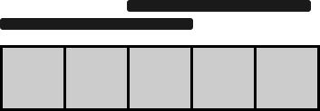

| Category | Difficulty | Likes | Dislikes |
|---|---|---|---|
| Algorithms | Hard | 520 | 17 |
google
You are given a 0-indexed binary string floor, which represents the colors of tiles on a floor:
floor[i] = '0' denotes that the ith tile of the floor is colored black.floor[i] = '1' denotes that the ith tile of the floor is colored white.You are also given numCarpets and carpetLen. You have numCarpets black carpets, each of length carpetLen tiles. Cover the tiles with the given carpets such that the number of white tiles still visible is minimum. Carpets may overlap one another.
Return the minimum number of white tiles still visible.
Example 1:
Input: floor = "10110101", numCarpets = 2, carpetLen = 2
Output: 2
Explanation:
The figure above shows one way of covering the tiles with the carpets such that only 2 white tiles are visible.
No other way of covering the tiles with the carpets can leave less than 2 white tiles visible.Example 2:

Input: floor = "11111", numCarpets = 2, carpetLen = 3
Output: 0
Explanation:
The figure above shows one way of covering the tiles with the carpets such that no white tiles are visible.
Note that the carpets are able to overlap one another.
Constraints:
1 <= carpetLen <= floor.length <= 1000floor[i] is either '0' or '1'.1 <= numCarpets <= 1000